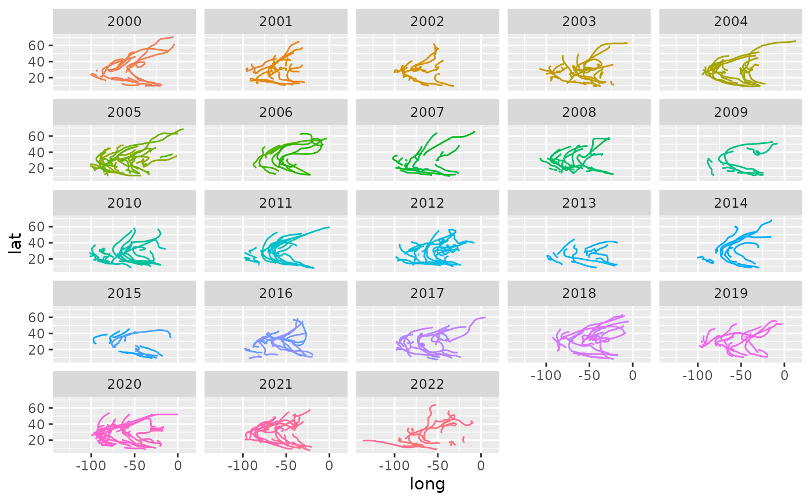

This dataset is the NOAA Atlantic hurricane database best track data, https://www.nhc.noaa.gov/data/#hurdat. The data includes the positions and attributes of storms from 1975-2022. Storms from 1979 onward are measured every six hours during the lifetime of the storm. Storms in earlier years have some missing data.
Format
A tibble with 19,537 observations and 13 variables:
- name
Storm Name
- year,month,day
Date of report
- hour
Hour of report (in UTC)
- lat,long
Location of storm center
- status
Storm classification (Tropical Depression, Tropical Storm, or Hurricane)
- category
Saffir-Simpson hurricane category calculated from wind speed.
NA: Not a hurricane1: 64+ knots
2: 83+ knots
3: 96+ knots
4: 113+ knots
5: 137+ knots
- wind
storm's maximum sustained wind speed (in knots)
- pressure
Air pressure at the storm's center (in millibars)
- tropicalstorm_force_diameter
Diameter (in nautical miles) of the area experiencing tropical storm strength winds (34 knots or above). Only available starting in 2004.
- hurricane_force_diameter
Diameter (in nautical miles) of the area experiencing hurricane strength winds (64 knots or above). Only available starting in 2004.
See also
The script to create the storms data set: https://github.com/tidyverse/dplyr/blob/main/data-raw/storms.R
Examples
storms
#> # A tibble: 19,537 × 13
#> name year month day hour lat long status category wind
#> <chr> <dbl> <dbl> <int> <dbl> <dbl> <dbl> <fct> <dbl> <int>
#> 1 Amy 1975 6 27 0 27.5 -79 tropical depr… NA 25
#> 2 Amy 1975 6 27 6 28.5 -79 tropical depr… NA 25
#> 3 Amy 1975 6 27 12 29.5 -79 tropical depr… NA 25
#> 4 Amy 1975 6 27 18 30.5 -79 tropical depr… NA 25
#> 5 Amy 1975 6 28 0 31.5 -78.8 tropical depr… NA 25
#> 6 Amy 1975 6 28 6 32.4 -78.7 tropical depr… NA 25
#> 7 Amy 1975 6 28 12 33.3 -78 tropical depr… NA 25
#> 8 Amy 1975 6 28 18 34 -77 tropical depr… NA 30
#> 9 Amy 1975 6 29 0 34.4 -75.8 tropical storm NA 35
#> 10 Amy 1975 6 29 6 34 -74.8 tropical storm NA 40
#> # ℹ 19,527 more rows
#> # ℹ 3 more variables: pressure <int>, tropicalstorm_force_diameter <int>,
#> # hurricane_force_diameter <int>
# Show a few recent storm paths
if (requireNamespace("ggplot2", quietly = TRUE)) {
library(ggplot2)
storms %>%
filter(year >= 2000) %>%
ggplot(aes(long, lat, color = paste(year, name))) +
geom_path(show.legend = FALSE) +
facet_wrap(~year)
}

storms
#> # A tibble: 19,537 × 13
#> name year month day hour lat long status category wind
#> <chr> <dbl> <dbl> <int> <dbl> <dbl> <dbl> <fct> <dbl> <int>
#> 1 Amy 1975 6 27 0 27.5 -79 tropical depr… NA 25
#> 2 Amy 1975 6 27 6 28.5 -79 tropical depr… NA 25
#> 3 Amy 1975 6 27 12 29.5 -79 tropical depr… NA 25
#> 4 Amy 1975 6 27 18 30.5 -79 tropical depr… NA 25
#> 5 Amy 1975 6 28 0 31.5 -78.8 tropical depr… NA 25
#> 6 Amy 1975 6 28 6 32.4 -78.7 tropical depr… NA 25
#> 7 Amy 1975 6 28 12 33.3 -78 tropical depr… NA 25
#> 8 Amy 1975 6 28 18 34 -77 tropical depr… NA 30
#> 9 Amy 1975 6 29 0 34.4 -75.8 tropical storm NA 35
#> 10 Amy 1975 6 29 6 34 -74.8 tropical storm NA 40
#> # ℹ 19,527 more rows
#> # ℹ 3 more variables: pressure <int>, tropicalstorm_force_diameter <int>,
#> # hurricane_force_diameter <int>